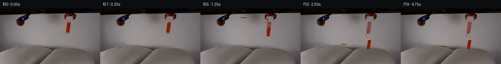

![首帧]()

Round 00
2026-11-04T19:11:56.315801+00:00像素候选变化代码 +391/−0inspection 更新
pixels e00b2e95aede32a4 · code 7a41200ee8417cfa
查看本轮 generate.py 真实 diff
--- previous/generate.py
+++ current/generate.py
@@ -0,0 +1,391 @@
+#!/usr/bin/env python3
+"""PixelWorld-Text: Generate 20-frame animation of grabber tools releasing
+a brown tennis ball and an orange block onto two pillows.
+
+Frame 00 must exactly match first_frame.png.
+Output: 20 256x144 RGB PNG frames at 4fps (5 seconds total).
+"""
+
+import numpy as np
+from PIL import Image
+from pathlib import Path
+
+CASE_DIR = Path('/mnt/bn/embodied-lf3/masiyuan/physics_iq_pixel_r2_full4fps/cleanroom_runs/deepseek-v4-pro/full_matrix_v1/text/case_0003_attempt_01/workspace')
+TMP = CASE_DIR / '.tmp'
+
+# ---------------------------------------------------------------------------
+# 1. Load first frame
+# ---------------------------------------------------------------------------
+img = Image.open(CASE_DIR / 'first_frame.png')
+original = np.array(img, dtype=np.uint8).copy() # (144, 256, 3)
+H, W = original.shape[:2]
+assert original.shape == (144, 256, 3)
+assert original.dtype == np.uint8
+
+# ---------------------------------------------------------------------------
+# 2. Build object masks
+# ---------------------------------------------------------------------------
+
+def is_brown_ball(r, g, b):
+ """Brown tennis ball color: earthy brown, small region at top-left."""
+ return (80 < r < 120) and (40 < g < 80) and (b < 20) and ((r - g) > 15)
+
+def is_orange_block(r, g, b):
+ """Orange block color: bright orange-red, right side."""
+ return (r > 120) and (g < 50) and (b < 20) and ((r - g) > 70)
+
+ball_mask = np.zeros((H, W), dtype=bool)
+orange_mask = np.zeros((H, W), dtype=bool)
+
+# Brown ball: search area x=100-120, y=10-16
+for y in range(10, 17):
+ for x in range(100, 121):
+ if is_brown_ball(*original[y, x]):
+ ball_mask[y, x] = True
+
+# Orange block: search area x=164-182, y=12-64
+for y in range(12, 65):
+ for x in range(164, 183):
+ if is_orange_block(*original[y, x]):
+ orange_mask[y, x] = True
+
+print(f"Brown ball mask: {ball_mask.sum()} pixels")
+print(f"Orange block mask: {orange_mask.sum()} pixels")
+
+# Verify: the objects should be present in frame 0
+assert ball_mask.sum() > 10, "Brown ball mask too small!"
+assert orange_mask.sum() > 100, "Orange block mask too small!"
+
+# ---------------------------------------------------------------------------
+# 3. Build clean plate (background without objects)
+# ---------------------------------------------------------------------------
+# For each object pixel, replace with horizontally-interpolated background color.
+# We look left and right for the nearest non-object pixel at the same row.
+
+def inpaint_horizontal(img, mask):
+ """Fill masked pixels using horizontal linear interpolation from nearest
+ unmasked pixels in the same row. Returns inpainted copy."""
+ result = img.astype(np.float64).copy()
+ h, w = mask.shape
+
+ for y in range(h):
+ row_mask = mask[y]
+ if not row_mask.any():
+ continue
+
+ # Find runs of masked pixels
+ masked_positions = np.where(row_mask)[0]
+ unmasked = np.where(~row_mask)[0]
+
+ if len(unmasked) == 0:
+ # Entire row is masked - use row above/below
+ if y > 0:
+ result[y] = result[y-1]
+ elif y < h - 1:
+ result[y] = result[y+1]
+ continue
+
… diff truncated; 304 more lines …